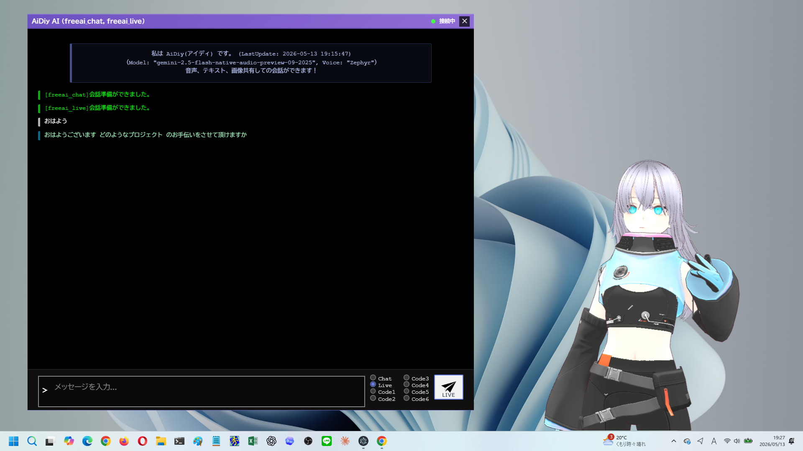

CHAT_AI_NAME
LIVE_AI_NAME
CODE_AI1〜6
VRM / VRMA
Web モード vs Desktop モード（実画面）

Desktop モード（Electron / localStorage）
AIコア
- テキスト、音声、画像、ファイル、コード支援を統合
- `CHAT_AI_NAME` / `LIVE_AI_NAME`
- `CODE_AI1_NAME`〜`CODE_AI6_NAME`
Avatar Web
- 左アバター + 右タブ
- Web モードは `sessionStorage`
- role / query で画面を表現
Avatar Electron
- 複数 BrowserWindow
- Electron モードは `localStorage`
- `window.desktopApi` で判定
3D / 同期
- Three.js + `@pixiv/three-vrm`
- `public/vrm/` と `public/vrma/`
- `avatar-desktop-sync` で状態同期
確認ポイント
AIコアは WebSocket + マルチベンダー AI + Code CLI パネルを統合する。
frontend_avatar は Electron デスクトップアプリと通常 Web ブラウザの両方で動作する。
Electron / Web 間の状態同期は BroadcastChannel `avatar-desktop-sync` を使う。
AGENTS / knowledge 抜粋
AGENTS.md
AIコアは、テキスト、音声、画像、ファイル、コード支援を統合する多パネル UI です。
frontend_avatar/AGENTS.md
`frontend_avatar` は AIコア専用の Avatar クライアントで、Electron と Web の両対応です。